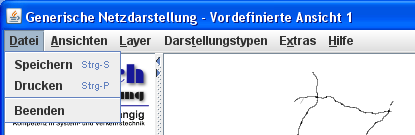
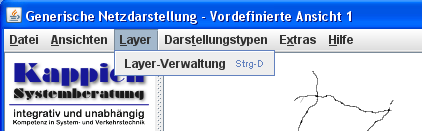
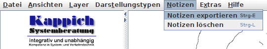
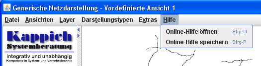
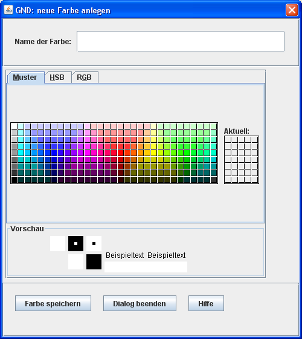

Die Generische Netzdarstellung
Inhalt:
- Was ist die Generische Netzdarstellung?
- Ansichten, Layer und Darstellungstypen
- Starten der GND
- Das Hauptfenster der GND
- Die Menüs
- Das Datei-Menü
- Das Ansichten-Menü
- Das Layer-Menü
- Das Darstellungstypen-Menü
- Das Notizen-Menü
- Das Extras-Menü
- Das Hilfe-Menü
- Die Ansichtsverwaltung
- Die Schaltfläche Neue Ansicht
- Die Schaltfläche Ansicht betrachten bzw. bearbeiten
- Die Schaltfläche Ansicht kopieren
- Die Schaltfläche Ansicht löschen
- Die Schaltfläche Hilfe
- Die Schaltfläche Ansicht aktivieren
- Die Schaltfläche Als Startansicht festlegen
- Der Ansicht-Bearbeiten-Dialog
- Die Schaltfläche Layer hinzufügen
- Die Schaltfläche Layer entfernen
- Die Schaltfläche Layer aufwärts
- Die Schaltfläche Layer abwärts
- Die aktuelle Ansicht bearbeiten
- Die Layer-Verwaltung
- Die Schaltfläche Neuer Layer
- Die Schaltfläche Layer betrachten bzw. bearbeiten
- Die Schaltfläche Layer kopieren
- Die Schaltfläche Layer löschen
- Die Schaltfläche Hilfe
- Der Layer-Bearbeiten-Dialog
- Die Darstellungstypenverwaltung
- Die Schaltfläche Neuer Darstellungstyp
- Die Schaltfläche Darstellungstyp betrachten bzw. bearbeiten
- Die Schaltfläche Darstellungstyp kopieren
- Die Schaltfläche Darstellungstyp löschen
- Die Schaltfläche Hilfe
- Der Darstellungstyp-Bearbeiten-Dialog
- Der Darstellungstyp-Bearbeiten-Dialog für Linien, Flächen und Komplexe
- Der Darstellungstyp-Bearbeiten-Dialog für Punkte
- Der Grundfigur-Bearbeiten-Dialog
- Dialog zur Festlegung dynamischer Eigenschaftswerte
- Die Farbenverwaltung
- Bildschirmauflösung einstellen
- Verwendung von Notizen
- Ein kleines Tutorial
Was ist die Generische Netzdarstellung?
Die Generische Netzdarstellung (GND) ist eine Kartendarstellung, die auf dem Teilmodell zur geografischen Referenzierung von Objekten (TeilmodellGeoReferenzierungGlobal bzw. kb.tmGeoReferenzierungGlobal) aufsetzt. In diesem Teilmodell erweitern alle geografisch referenzierbaren Objekttypen den Objekttyp typ.geoReferenzObjekt. Die Netzdarstellung erfolgt insofern generisch, als dass alle Objekte mit Objekttypen unterhalb dieses Typs, die auch einen geografischen Bezug haben, von der GND dargestellt werden können. Darüber hinaus kann die Art der Darstellung für die vier Subtypen dieses Typs (typ.punkt, typ.linie, typ.fläche und typ.komplex) frei konfiguriert werden.
Ansichten, Layer und Darstellungstypen
Die drei Begriffe Ansicht, Layer und Darstellungstyp sind die Strukturen, in denen die GND ihre Daten zur Visualisierung verwaltet, und die vom Benutzer festgelegt werden können. Bevor diese Begriffe formal eingeführt werden, werden sie hier durch ein einfaches Beispiel motiviert.Angenommen, es sind das Straßennetz in Form von Straßensegmenten, alle Messquerschnitte und alle Wälder zu visualisieren. Das Straßennnetz soll mit schwarzer Farbe und vorgegebener Strichbreite gezeichnet werden, jeder Messquerschnitte durch ein Rechteck repräsentiert werden, das je nach erfasster Verkehrslage mit einer anderen Farbe ausgefüllt wird, und die Wälder sollen als grüne Flächen dargestellt werden.
Es bietet sich an, jede dieser drei Klassen getrennt zu verwalten. Diese Aufgabe kommt je einem Layer zu: er kennt den Objekttyp seiner Objekte, im Beispiel also Straßensegment, Messquerschnitt bzw. Wald. Nun muss noch festgelegt werden, wie die Objekte zu visualisieren sind. Diese Aufgabe übernehmen die Darstellungstypen. Die Festlegung eines Darstellungstypen unterscheidet sich je nachdem, ob er zur Visualisierung von Linien, Punkten oder Flächen verwendet wird. Für den Layer mit den Straßensegmenten wird man einen Darstellungstypen für Linienobjekte wählen, bei dem Farbe und Strichbreite einstellbar sind; entsprechend wird man für den Layer der Messquerschnitte einen Darstellungstypen für Punktobjekte wählen, der das geforderte Rechteck zeichnet und mit der gewünschten Farbe füllt; schließlich wird man für den Layer der Wälder einen Darstellungstypen wählen, der solche Flächen in dem gewünschten Grün zeichnet. Jeder Layer kennt hier also nicht nur den Objekttyp seiner Objektklasse, sondern auch einen geeigneten Darstellungstypen. Schließlich macht es Sinn, diese drei Layer als eine Einheit zu verwalten, und diese Aufgabe übernimmt eine sogenannte Ansicht.
Nach diesem Beispiel nun die etwas formalere Beschreibung. Die GND erlaubt es, sogenannte Ansichten anzulegen, zu bearbeiten, zu löschen und zu speichern. Eine Ansicht ist eine Menge von Layern. Jeder einzelne Layer zeigt gewisse Informationen zu allen Objekten eines Subtyps eines der vier Typen typ.punkt, typ.linie, typ.fläche oder typ.komplex. Genau eine dieser Ansichten wird von der GND angezeigt und deshalb die aktuelle Ansicht genannt. Welche Informationen der Objekte eines Layers und wie sie gezeigt werden, wird durch sogenannte Darstellungtypen festgelegt.
Ansichten, Layer und Darstellungstypen können vom Benutzer definiert und dauerhaft auf dem Rechner gespeichert werden. Weiterhin besteht die Möglichkeit, solche Definitionen von einem Benutzer bzw. Rechner auf einen anderen zu übertragen. Neben den benutzer-definierten Ansichten, Layern und Darstellungstypen gibt es solche auch in vordefinierter Form, d.h. sie wurden bereits im Quelltext des Programms kodiert und können deshalb nicht dauerhaft verändert werden.
Starten der GND
Die Generische Netzdarstellung (GND) kann auf zwei Arten gestartet werden: als eigenständige Anwendung, indem man die Java-Anwendung mit der Klasse de.kappich.pat.gnd.gnd.RunGND aus startet, oder aus einem GTM mit GND-Plugin, indem man die entsprechende Schaltfläche betätigt.
Nachdem die GND auf die eine oder andere Weise gestartet wurde, öffnet sich das Hauptfenster.Als eigenständige Anwendung starten
Die GND kann als eigenständige Java-Anwendung mit dem Programm java gestartet werden. Die zu startende Klasse ist de.kappich.pat.gnd.gnd.RunGND. Man muss sicherstellen, dass der Classpath das Java-Archiv de.kappich.pat.gnd-runtime.jar enthält. Um den Speicherbedarf der Java Virtual Machine (JVM) abzudecken, empfiehlt es sich, folgende Aufrufoption vor dem Klassennamen zu nutzen: -Xmx500m.Die GND liest oft größere Mengen konfigurierender Daten (Koordinaten), die sich zwischen zwei Starts des Programms nicht ändern. Ein Teil dieser Daten kann lokal gespeichert werden, und somit dazu beitragen, dass die Initialisierungszeit ab dem zweiten Start deutlich verringert wird. Hierzu ist hinter dem Parameter -lokaleSpeicherungKonfiguration ein Verzeichnisname anzugeben.
Wird die GND so als eigenständige Anwendung gestartet, erscheint als erstes folgender Login-Dialog:
Erst nach einem erfolgreichen Login wird die GND gestartet.
Der Login-Dialog kann unterdrückt werden, indem man beim Start das Flag -autologin setzt; allerdings muss man dann ebenfalls die Aufrufparameter -benutzer, -authentifizierung und -datenverteiler auf die entsprechenden Werte setzen.
Die GND ist für Erweiterungen hinsichtlich externer Darstellungstypen offen. Noch gibt es außer einem Beispiel-Plugin keine solche Erweiterungen. Jedes solche Plugin besteht aus der Implementation von 4 Java-Interfaces. Um es hinzuzuladen muss nur der vollständige Klassenname derjenigen Klasse, die das Interface DisplayObjectTypePlugin implementiert, in der komma-separierten Liste hinter dem Gleichheitszeichen bei dem Parameter -plugins angegeben werden (dieser GND-Parameter hat nichts gemein mit dem gleichnamigen GTM-Parameter, der im nächsten Absatz erwähnt wird). Natürlich müssen diese externen Plugins dann auch im Classpath auftreten.
Aus dem GTM heraus starten
Um die GND aus dem GTM heraus starten zu können, muss dieser mit dem zusätzlichen Aufrufparamter -plugins=de.kappich.pat.gnd.gnd.GNDPlugin gestartet werden. Auch hier muss man sicherstellen, dass der Classpath das Java-Archiv de.kappich.pat.gnd-runtime.jar enthält. Nachdem der GTM gestartet ist, erscheint er mit einer zusätzlichen Schaltfläche, die mit GND starten beschriftet ist:
Eine besondere Funktionalität bietet der Start aus dem GTM heraus: wählt man im GTM Objekte aus, deren Typ ein Subtyp von typ.geoReferenzObjekt ist, so startet die GND mit einem auf diese Objekte eingeschränkten Ausschnitt. (Umgekehrt ist es möglich, in der GND Objekte auszuwählen und diese an den GTM zurückzugeben; s. dazu das Extras-Menü.)
Wird die GND aus dem GTM heraus gestartet, so kann die Initialisierungszeit ebenfalls duch das Cachen von Konfigurationsdaten beschleunigt werden. Hierzu ist wieder hinter dem Parameter -lokaleSpeicherungKonfiguration ein Verzeichnis anzugeben, in dem diese Daten lokal gespeichert werden. Diesmal allerdings ist dieser Parameter ein Aufrufparameter des GTM, und die Daten werden erst nach dem Beenden des ersten GTM erstmalig geschrieben. (Das Cachen von Konfigurationsdaten ist ein allgemeiner Mechanismus des Datenverteilers. Jede Anwendung erstellt dabei ihre eigene Cache-Datei, die sie am Namen wiedererkennt. Demzufolge führen Starts der GND als eigenständige Anwendung und aus der GTM heraus zu zwei Cache-Dateien, und der Vorteil bei der Initialisierungszeit tritt erst ein, wenn der zweite Start in demselben Modus erfolgt.)
Aus dem GTM heraus können derzeit noch keine externen Plugins hinzugeladen werden.
Einstellen des Zentralmeridians
Die Koordinaten, die die GND aus der Konfiguration erhält, sind WGS84-Längen- und Breitengrade. Diese werden sofort nach dem Erhalt in UTM-Koordinaten umgerechnet. Für die westlichen Bundesländer ist hierbei der Zentralmeridian 9 zu wählen, der auch als Defaultwert verwendet wird. Im Osten Deutschlands sollte stattdessen der Zentralmeridian 15 gewählt werden. Dies wird über den Aufrufparameter der JVM -Dde.kappich.pat.gnd.ZentralMeridian=15 erreicht, der als solcher vor dem Klassenname stehen muss.


Das Hauptfenster der GND
Das Hauptfenster der GND besteht aus der Titelzeile, einer Menüleiste mit verschiedenen Menüs, einem Kartenfenster auf der rechten Seite und einer dazu gehörenden Legende auf der linken Seite (s. Abb.). Unter der Legende befindet sich der Bereich um Notizen einzugeben und darunter der verwendete Maßstab.

Die Titelzeile des Hauptfensters
In der Titelzeile wird der Name des Programms und der Name der aktuellen Ansicht angezeigt.Die Menüleiste
Die Menüleiste enthält die Menüs Datei, Ansichten, Layer, Darstellungstypen, Notizen, Extras und Hilfe. Die Menüpunkte dieser Menüs werden in einem eigenen Kapitel erklärt.Die Kartendarstellung
Die Kartendarstellung bildet den Inhalt des Hauptfensters der GND. Sie zeigt immer genau eine Ansicht, die die aktuelle Ansicht genannnt wird. Auf der linken Seite befindet sich die Legende und auf der rechten die Kartenansicht.In der Legende werden die Inhalte der Layer der aktuellen Ansicht beschrieben. Die Reihenfolge entspricht der in der Kartenansicht, was bedeutet, dass ein Layer, der in der Legende oberhalb eines anderen steht, in der Kartenansicht oberhalb des anderen gezeichnet wird, also gegebenenfalls diesen ganz oder teilweise überdeckt.
Unten in der Legende wird stets der aktuelle Maßstab der Kartenansicht angezeigt. Es handelt sich allerdings um eine aus den Bildschirmangaben des Rechners ermittelte Schätzgröße, und nicht um den exakten Wert. Dieser Maßstab ist unter anderen relevant für das Ein- und Ausblenden von Layern, sowie den Wechsel von Darstellungstypen. Mehr zu diesen Themen in den entsprechenden Abschnitten.
In der Kartenansicht kann der dargestellte Bereich durch Drehen des Mausrads verändert werden: der Mauszeiger ist dabei der Mittelpunkt des Rechtecks, das je nach Drehrichtung vergrößert oder verkleinert wird. Ist kein Mausrad vorhanden, so muss die entsprechende Alternativoperation verwendet werden.
Eine andere Möglichkeit den Ausschnitt der Kartendarstellung zu verändern, besteht darin, die linke Maustaste zu drücken und gedrückt zu halten, und gleichzeitig die Maus zu verschieben. Der Inhalt der Kartenansicht wird dabei genau um die Mausverschiebung bewegt. Ist keine Maus vorhanden, so muss wieder die entsprechende Alternativoperation verwendet werden.
Legende und Kartenansicht besitzen Tooltipps, d.h. fährt man mit dem Mauszeiger über diese Bestandteile, so werden nach kurzer Verweilzeit und für kurze Zeit Zusatzinformationen eingeblendet. In der Legende sind diese Tooltipps dauerhaft aktiv, auf der Kartenansicht muss der Tooltipp erst aktiviert wird. Dies geschieht im Extras-Menü, und sollte erst bei kleineren Kartenausschnitten geschehen.
Die Tooltipps der Legende werden in den Definitionen der Layer und Darstellungstypen festgelegt. Auf der Kartenansicht werden in jedem sichtbaren Layer, der auch selektierbar ist (s.u.), die nächstgelegenen Objekte gesucht. Gelingt es, in einem Layer 5 oder weniger in der Umgebung des Mauszeigers zu finden, so werden diese alle im Tooltipp aufgelistet. Andernfalls werden 5 Objekte aufgelistet und durch eine weitere Zeile mit drei Punkten wird angedeutet, dass weitere Objekte in der Nähe liegen. (Gerade die hierfür notwendigen Rechenoperationen machen es sinnvoll, den Tooltipp nur gezielt bei kleineren Ausschnitten hinzuzuschalten.)
In der Kartenansicht gibt es zusätzlich einen Auswahlmechanismus für die dargestellten Objekte, der durch Drücken der ALT-Taste und Klicken in die Kartenansicht betätigt wird. Gibt es ein eindeutig am nächsten gelegenes Objekt, so wird dieses unmittelbar selektiert. Gibt es mehrere, so wird ein Auswahldialog auf der Kartenansicht geöffnet, aus dem man ein Objekt auswählen kann. Gibt es kein Objekt in der Nähe des Punktes zum Zeitpunkt des Klickens, so sollte man den Mauszeiger genauer an die Geometrie der zu selektierenden Objekte heranführen (gegebenenfalls nach einem Hineinzoomen).
Die Menüs
Die Menüleiste der GND hat sechs Menüpunkte, die wir im Folgenden erläutern.Das Datei-Menü
Das Datei-Menü hat drei Unterpunkte: Speichern, Drucken und Beenden. Bei dem Menüpunkt Speichern öffnet sich ein Datei-Auswahl-Dialog, mit dessen Hilfe der aktuell sichtbare Ausschnitt der Kartenansicht als PNG-Datei gespeichert werden kann. Bei dem Menüpunkt Drucken öffnet sich ein Drucker-Dialog, mit dessen Hilfe der aktuell sichtbare Ausschnitt der Kartenansicht gedruckt werden kann. Bei Betätigung des Menüpunkts Beenden wird die GND beendet.
Das Ansichten-Menü
Das Ansichten-Menü hat die zwei Menüpunkte: Ansichtsverwaltung und Aktuelle Ansicht. Über den Menüpunkt Ansichtsverwaltung kommt man zu einer Übersicht über alle vorhandenen Ansichten, von der aus man neue Ansichten erstellen und bestehende betrachten, bearbeiten oder auch löschen kann. Über den Menüpunkt Aktuelle Ansicht gelangt man zu einem Dialog, in dem man die Eigenschaften der aktuellen Ansicht ansehen und verändern kann.
Das Layer-Menü
Das Layer-Menü hat nur einen Menüpunkt: die Layer-Verwaltung. Hierüber gelangt man zu einer Übersicht über alle vorhandenen Layer. Dort kann man neue Layer erstellen und bestehende betrachten, bearbeiten oder auch löschen.
Das Darstellungstypen-Menü
Das Darstellungstypen-Menü hat nur einen Menüpunkt: die Darstellungstypenverwaltung. Hierüber gelangt man zu einer Übersicht über alle vorhandenen Darstellungstypen. Dort kann man neue Darstellungstypen erstellen und bestehende betrachten, bearbeiten oder auch löschen.
Das Notizen-Menü
Das Notizen-Menü besitzt Menüpunkte für den Export und das Löschen der Notizen. Mit Notizen exportieren können alle derzeit existierenden Notizen (egal ob sichtbar oder nicht) in eine CSV-Datei exportiert werden. Mit Notizen löschen werden alle existierenden Notizen, egal ob sichtbar oder nicht, gelöscht. Ein manueller Import von Notizen ist derzeit nicht vorgesehen, die Notizen werden aber über mehrere Sitzungen hinweg in den Programmeinstellungen (Präferenzen) gespeichert und können gegebenenfalls über den Export und Import der Präferenzen im Extras-Menü weitergegeben werden.
Das Extras-Menü
Das Extras-Menü besitzt Menüpunkte für die Farbenverwaltung, für die Verwaltung der benutzer-definierten Einstellungen und solche zur Beeinflussung der grafischen Darstellung.
Wählt man den Menüpunkt Farbenverwaltung, so öffnet sich ein Dialog, der einen Überblick über die existierenden Farben gibt, und von dem aus man neue Farben definieren oder auch bestehende Farben löschen kann.
Der Benutzer der GND hat ein Fülle von Möglichkeiten, Einstellungen und Festlegungen zu machen, die über die aktuelle Programmbenutzung hinaus gültig bleiben sollen. Dazu gehören insbesondere die Definition von eigenen Ansichten, Layern und Darstellungstypen. Alle derartigen Informationen werden hier Präferenzen genannt. Die Präferenzen werden betriebssystemspezifisch gespeichert und sollen vom Benutzer nicht direkt manipuliert werden. Um aber die Präferenzen auch anderen Benutzern zur Verfügung zu stellen oder auf anderen Rechnern nutzen zu können, gibt es Möglichkeiten zu deren Ex- und Import. Benutzt man den Menüpunkt Präferenzen exportieren, so öffnet sich ein Dialog, der die Speicherung der Präferenzen in einer XML-Datei erlaubt. Diese Datei kann unabhängig vom Betriebssystem für einen anderen Benutzer oder auf einem anderen Rechner mit dem Menüpunkt Präferenzen importieren wieder geladen werden. Dieser Import ersetzt allerdings alle bestehenden Präferenzen durch die Festlegungen, die in der XML-Datei gespeichert wurden. Schließlich existiert noch der Menüpunkt Präferenzen löschen, bei dessen Benutzung alle bestehenden Präferenzen gelöscht werden und die GND neu gestartet wird. Dieser Menüpunkt ist grundsätzlich verriegelt, wenn die GND aus einer anderen Anwendung (z.B. dem GTM) heraus gestartet wird.
Genau umgekehrt verhält es sich mit dem Menüpunkt Ausgewählte Objekte an den GTM übergeben: dieser ist ausschließlich dann aktiviert, wenn die GND aus dem GTM heraus gestartet wurde. Betätigt man diesen Menüpunkt, so werden alle auf der Karte zuvor selektierten Objekte an den GTM zurückgegeben und in dessen Hauptfenster ausgewählt.
Die Menüpunkte Doppelpufferung und Antialiasing schalten die entsprechende Funktion der grafischen Darstellung an oder aus. Bei eingeschalteter Doppelpufferung wird die Kartenansicht intern gespeichert, um, falls möglich, beim Darstellen Zeit zu gewinnen, etwa wenn sich der Ausschnitt ändert. Antialiasing hingegen dient der Vermeidung ungewollter grafischer Effekte, die sich zum Beispiel daraus ergeben, dass der Monitor aus Bildpunkten besteht. Bei eingeschaltetem Antialising sehen Linien und Kanten oft besser aus, allerdings wird dies durch zusätzlich nötige Berechnungen erzielt, die sich unter Umständen zeitlich bemerkbar machen. Diese beiden Einstellungsmöglichkeiten wurden dem Benutzer zugänglich gemacht, um auf die Performanz bzw. Güte der Darstellung einwirken zu können.
Wie die Legende hat auch die Kartenansicht einen Tooltipp. Dieser ist über denn Menüpunkt Tooltipp auf der Karte an- und ausschaltbar. Stellt die Kartenansicht einen größeren Teil des Netzes dar, so ist er meist wenig informativ oder sogar störend und verbraucht zudem noch erhebliche Rechenzeit, um kontinuierlich die nächstgelegenen Objekte zu berechnen. Deshalb sollte er erst, wenn er wirklich benötigt wird, also bei Darstellungen kleinerer Netzbereiche, hinzugeschaltet werden.
Das Hilfe-Menü
Das Hilfe-Menü hat zwei Menüpunkte: Online-Hilfe öffnen und Online-Hilfe speichern. Mit dem Menüpunkt Online-Hilfe öffnen wird die Online-Hilfe geöffnet. Angezeigt wird der Inhalt einer HTML-Datei, in der die GND beschrieben und ihre Benutzung erklärt wird. Diese HTML-Datei kann der Benutzer auch speichern, um sie unabhängig von einem laufenden GND zu lesen. Dazu verwendet man den Menüpunkt Online-Hilfe speichern.


Die Ansichtsverwaltung
Die Ansichtsverwaltung gibt dem Benutzer die Möglichkeit, neue Ansichten anzulegen, bestehende zu bearbeiten, zu betrachten, zu kopieren oder zu löschen. Das Verändern und Löschen ist nur für die benutzer-definierten Ansichten möglich. Die Ansichtsverwaltung besteht aus einem Tabellenfenster mit den Namen aller Ansichten, fünf Schaltflächen auf der rechten Seite und drei Schaltflächen in der unteren Zeile. Wählt man eine der Ansichten im Tabellenfenster aus, so ändern sich die Stati und Beschriftungen eines Teils der Schaltflächen in Abhängigkeit davon, ob die Ansicht benutzer-definiert ist oder im Quelltext des Programms definiert wurde.

Die Schaltfläche Neue Ansicht
Die oberste Schaltfläche auf der rechten Seite ist immer mit Neue Ansicht beschriftet und kann stets betätigt werden. Es öffnet sich dann ein Dialog, in dem alle Informationen für eine neue Ansicht eingetragen werden können und diese gespeichert werden kann.Die Schaltfläche Ansicht betrachten bzw. Ansicht bearbeiten
Sobald eine Ansicht im Tabellenfenster ausgewählt wird, wird der Text der zweiten Schaltfläche von oben angepasst: ist die Ansicht benutzer-definiert, so erscheint Ansicht bearbeiten, andernfalls Ansicht betrachten. Betätigt man die Schaltfläche, so öffnet sich ein Dialog, in dem man die Ansicht bearbeiten bzw. betrachten kann.Die Schaltfläche Ansicht kopieren
Wählt man eine Ansicht im Tabellenfenster aus, so kann man diese durch betätigen der mit Ansicht kopieren beschrifteten Schaltfläche kopieren. Es öffnet sich ein Dialog, in dem alle Informationen der ausgewählten Ansicht übernommen wurden und an den Namen die Kennzeichnung (Kopie) angehängt wurde. Diese Kopie kann in diesem Dialog bearbeitet und anschließend gespeichert werden.Die Schaltfläche Ansicht löschen
Sobald eine Ansicht im Tabellenfenster ausgewählt wird, wird der Status der mit Ansicht löschen beschrifteten Schaltfläche angepasst: ist die Ansicht benutzer-definiert, so kann die Schaltfläche betätigt werden, wodurch die Ansicht ohne Nachfrage unwiderruflich gelöscht wird.Die Schaltfläche Hilfe
Betätigt man die Hilfe-Schaltfläche, so öffnet sich eine Online-Hilfe im Abschnitt Ansichtverwaltung.Die Schaltfläche Ansicht aktivieren
Sobald eine Ansicht im Tabellenfenster ausgewählt ist, kann die mit Ansicht aktivieren gekennzeichnete Schaltfläche in der unteren Zeile betätigt werden. Hierdurch wird die aktuelle Ansicht durch die ausgewählte Ansicht ersetzt. Das Aktivieren einer Ansicht benötigt je nach Anzahl der Layer eine gewisse Zeit und ist mit der Initialisierung der GND beim Start vergleichbar. Ist die ausgewählte Ansicht mit der aktuellen Ansicht identisch, so wird die aktuelle Ansicht neu initialisiert.Die Schaltfläche Als Startansicht festlegen
Sobald eine Ansicht im Tabellenfenster ausgewählt ist, kann die mit Als Startansicht festlegen gekennzeichnete Schaltfläche in der unteren Zeile betätigt werden. Dadurch wird in den Benutzereinstellungen die ausgewählte Ansicht als diejenige festgelegt, mit der die GND beim Starten als aktuelle Ansicht beginnt.
Der Ansicht-Bearbeiten-Dialog
Der Ansicht-Bearbeiten-Dialog wird von der Ansichtsverwaltung heraus über drei verschiedene Schaltflächen erreicht. Je nachdem wie man ihn erreicht, ist seine Titelzeile anders beschriftet und seine Funktionen mehr oder weniger eingeschränkt.
Der Dialog hat oben ein Textfeld für den Namen der Ansicht, in der Mitte eine Tabelle mit fünf Spalten und je einer Zeile pro Layer, rechts vier Schaltflächen und unten drei Schaltflächen.
In der ersten Spalte der Tabelle steht der Layer-Name, in der zweiten und dritten Spalte die beiden Maßstäbe zwischen denen der Layer eingeblendet wird, und in der vierten und fünften Spalte befinden sich zwei Checkboxen zur Selektiertbarkeit und Sichtbarkeit des Layers.
Ist die Checkbox in der vierten Spalte markiert, so werden die Objekte des Layer in die Selektion und den Tooltipp auf der Kartenansicht mit einbezogen.
Ist die Checkbox in der fünften Spalte markiert, so ist der Layer sichtbar, wenn der Maßstab zwischen den beiden in der zweiten und dritten Spalte angegebenen Grenzen liegt. Entfernt man die Markierung der Checkbox, so wird der Layer sofort ausgeblendet. Markiert man die Checkbox wieder, so wird der Layer wieder eingeblendet. Diese Checkbox gestattet es, einen Layer schnell ein- und auszublenden (im Gegensatz zum Entfernen aus der Ansicht (s. Schaltfläche Layer entfernen, was beim Hinzufügen mit der Schaltfläche Layer hinzufügen aufgrund der Initialisierung eine Wartezeit zur Folge hat).
Die Schaltfläche Layer hinzufügen
Betätigt man die Schaltfläche Layer hinzufügen, so öffnet sich folgender Dialog.
In der Tabelle in der Mitte stehen alle Layernamen. Hier kann man einen oder mehrere Namen auswählen und dann alle ausgewählten Layer zu der Ansicht hinzufügen, indem man rechts die Schaltfläche Layer hinzufügen betätigt. Oft entsteht dann eine Wartezeit, da die Initialisierung eines Layers eine gewisse Zeit in Anspruch nimmt.
Die Schaltfläche Layer entfernen
Betätigt man die Schaltfläche Layer entfernen, so werden alle in der Tabelle ausgewählten Layer sofort aus der Ansicht entfernt. Erneutes Hinzufügen hat eine neue Initialisierung und die damit verbundene Wartezeit zur Folge. Das schnelle Ein- und Ausblenden von Layern kann stattdessen über die entsprechende Checkbox in der fünften Spalte der Tabelle erreicht werden.Die Schaltfläche Layer aufwärts
Betätigt man die Schaltfläche Layer aufwärts, so werden alle in der Tabelle selektierten Layer, für die dies möglich ist, um eine Zeile nach oben verschoben. Dadurch ändert sich gleichermaßen die Reihenfolge der Layer in der Legende und in der Kartenansicht: in der Legende erscheinen die Layer in der selben Reihenfolge wie in der Tabelle, und in der Kartenansicht werden weiter oben stehende Layer oberhalb der weiter unten stehenden Layer gezeichnet und können diese somit teilweise oder ganz verdecken.Die Schaltfläche Layer abwärts
Betätigt man die Schaltfläche Layer abwärts, so werden alle in der Tabelle selektierten Layer, für die dies möglich ist, um eine Zeile nach unten verschoben. Dadurch ändert sich gleichermaßen die Reihenfolge der Layer in der Legende und in der Kartenansicht: in der Legende erscheinen die Layer in der selben Reihenfolge wie in der Tabelle, und in der Kartenansicht werden weiter oben stehende Layer oberhalb der weiter unten stehenden Layer gezeichnet und können diese somit teilweise oder ganz verdecken.

Die aktuelle Ansicht bearbeiten
Wählt man im Menü Ansichten den Menüpunkt Aktuelle Ansicht, so gelangt man zu diesem Dialog, mit dem man die aktuelle Ansicht verändern kann.

Dieser Dialog weist dieselben Funktionen wie der Ansicht-Bearbeiten-Dialog auf. Es hat allerdings eine Besonderheit: ist die aktuelle Ansicht eine vordefinierte Ansicht, so kann sie hier trotzdem verändert werden. Nur ein dauerhaftes Speichern der Änderungen ist nicht möglich.
Die Layer-Verwaltung
Die Layerverwaltung gibt dem Benutzer die Möglichkeit, neue Layer anzulegen, bestehende zu bearbeiten, zu betrachten, zu kopieren oder zu löschen. Das Verändern und Löschen ist nur für die benutzer-definierten Layer möglich. Die Layerverwaltung besteht aus einem Tabellenfenster mit den Namen aller Layer, fünf Schaltflächen auf der rechten Seite und einer Schaltfläche in der unteren Zeile. Wählt man einen Layer im Tabellenfenster aus, so ändern sich Status und Beschriftungen eines Teils der Schaltflächen in Abhängigkeit davon, ob der Layer benutzer-definiert ist oder im Quelltext des Programms definiert wurde.
Die Schaltfläche Neuer Layer
Die oberste Schaltfläche auf der rechten Seite ist immer mit Neuer Layer beschriftet und kann stets betätigt werden. Es öffnet sich dann ein Dialog, in dem alle Informationen für einen neuen Layer eingetragen werden können und dieser dann gespeichert werden kann.Die Schaltfläche Layer betrachten bzw. Layer bearbeiten
Sobald ein Layer im Tabellenfenster ausgewählt wird, wird der Text der zweiten Schaltfläche von oben angepasst: ist der Layer benutzer-definiert, so erscheint Layer bearbeiten, andernfalls Layer betrachten. Betätigt man die Schaltfläche, so öffnet sich ein Dialog, in dem man den Layer bearbeiten bzw. betrachten kann.Die Schaltfläche Layer kopieren
Wählt man einen Layer im Tabellenfenster aus, so kann man diese durch Betätigen der mit Layer kopieren beschrifteten Schaltfläche auf der rechten Seite kopieren. Es öffnet sich ein Dialog, in den alle Informationen des ausgewählten Layers übernommen wurden und dabei an den Namen die Kennzeichnung (Kopie) angehängt wurde. Diese Kopie kann nun bearbeitet und anschließend gespeichert werden.Die Schaltfläche Layer löschen
Sobald ein Layer im Tabellenfenster ausgewählt wird, wird der Status der mit Layer löschen beschrifteten Schaltfläche angepasst: ist der Layer benutzer-definiert, so kann die Schaltfläche betätigt werden, wodurch der Layer unwiderruflich gelöscht wird. Der Layer wird auch dann gelöscht, wenn er in einer der Ansichten verwendet wird.Die Schaltfläche Hilfe
Betätigt man die Hilfe-Schaltfläche, so öffnet sich eine Online-Hilfe im Abschnitt Layerverwaltung.
Der Layer-Bearbeiten-Dialog
Der Layer-Bearbeiten-Dialog wird aus der Layer-Verwaltung heraus über drei verschiedene Schaltflächen erreicht. Je nachdem wie man ihn erreicht, ist seine Titelzeile anders beschriftet und seine Funktionen mehr oder weniger eingeschränkt.
Der Dialog hat oben je ein Textfeld für den Namen des Layers und eine Information, die als Tooltipp in der Legende verwendet wird, sowie eine Auswahlbox für den Typ der Objekte des Layers. In der Mitte befindet sich eine Tabelle mit drei Spalten und rechts davon zwei Schaltflächen. Schließlich befinden sich in der unteren Zeile drei Schaltflächen.
Jede Zeile in der Tabelle zeigt in der ersten Spalte den Namen eines Darstellungstypen an. Die beiden folgenden Spalten enthalten die Grenzen für den Maßstab, zwischen denen dieser Darstellungstyp verwendet wird.
Ist eine Zeile selektiert, so kann sie durch Betätigen der Schaltfläche Zeile löschen unwiderruflich gelöscht werden. Betätigt man dagegen die Schaltfläche Neue Zeile, so öffenet sich folgender Dialog:
In der Auswahlbox kann man den gewünschten Darstellungstypen auswählen und in den beiden Textfeldern die Maßstabsgrenzen eintragen. Anschließend kann man die Daten durch Betätigen der Schaltfläche Daten übernehmen in den Layer-Bearbeiten-Dialog übernehmen.
Die Darstellungstypenverwaltung
Die Darstellungstypenverwaltung gibt dem Benutzer die Möglichkeit, neue Darstellungstypen anzulegen, bestehende zu bearbeiten, zu betrachten, zu kopieren oder zu löschen. Das Verändern und Löschen ist nur für die benutzer-definierten Darstellungstypen möglich. Die Darstellungstypenverwaltung besteht aus einem Tabellenfenster mit den Namen aller Darstellungstypen, fünf Schaltflächen auf der rechten Seite und einer Schaltfläche in der unteren Zeile. Wählt man einen Darstellungstyp im Tabellenfenster aus, so ändern sich Status und Beschriftungen eines Teils der Schaltflächen abhängig davon, ob der Darstellungstyp benutzer-definiert ist oder im Quelltext des Programms definiert wurde.

Die Schaltfläche Neuer Darstellungstyp
Die oberste Schaltfläche auf der rechten Seite ist immer mit Neuer Darstellungstyp beschriftet und kann stets betätigt werden. Es öffnet sich dann folgender Dialog, in dem die Art des Darstellungstypen ausgewählt werden muss, d.h., es wird festgelegt, ob der neue Darstellungstyp für Punkte, Linien, Flächen oder Komplexe verwendet werden kann.
Nach dieser Festlegung öffnet sich ein Dialog, in dem der neue Darstellungstyp definiert und gespeichert werden kann.
Die Schaltfläche Darstellungstyp betrachten bzw. Darstellungstyp bearbeiten
Sobald ein Darstellungstyp im Tabellenfenster ausgewählt wird, wird der Text der zweiten Schaltfläche von oben angepasst: ist der Darstellungstyp benutzer-definiert, so erscheint Darstellungstyp bearbeiten, andernfalls Darstellungstyp betrachten. Betätigt man die Schaltfläche, so öffnet sich ein Dialog, in dem man den Darstellungstyp bearbeiten bzw. betrachten kann.Die Schaltfläche Darstellungstyp kopieren
Wählt man einen Darstellungstyp im Tabellenfenster aus, so kann man diesen durch Betätigen der mit Darstellungstyp kopieren beschrifteten Schaltfläche kopieren. Es öffnet sich ein Dialog, in den alle Informationen des ausgewählten Darstellungstyps übernommen wurden und an den Namen die Kennzeichnung (Kopie) angehängt wurde. Diese Kopie kann nun bearbeitet und anschließend gespeichert werden.Die Schaltfläche Darstellungstyp löschen
Sobald ein Darstellungstyp im Tabellenfenster ausgewählt wird, wird der Status der mit Darstellungstyp löschen beschrifteten Schaltfläche angepasst: ist der Darstellungstyp benutzer-definiert, so kann die Schaltfläche betätigt werden. Geschieht dies, so wird der Darstellungstyp unwiderruflich gelöscht, wenn er aktuell in keinem Layer verwendet wird. Andernfalls wird er nicht gelöscht und der Benutzer wird stattdessen darüber informiert, in welchen Layern der Darstellungstyp verwendet wird.Die Schaltfläche Hilfe
Betätigt man die Hilfe-Schaltfläche, so öffnet sich eine Online-Hilfe im Abschnitt Darstellungstypenverwaltung.
Der Darstellungstyp-Bearbeiten-Dialog
Der Darstellungstyp-Bearbeiten-Dialog wird von der Darstellungstypenverwaltung heraus über drei verschiedene Schaltflächen erreicht. Je nachdem wie man ihn erreicht, ist seine Titelzeile anders beschriftet und seine Funktionen mehr oder weniger eingeschränkt. Den größten Unterschied macht aber die Art des Darstellungstyps aus: der Dialog zum Verwalten von Darstellungstypen für Punkte ist deutlich komplexer als seine Pendants für Linien, Flächen und Komplexe.Der Darstellungstyp-Bearbeiten-Dialog für Linien, Flächen und Komplexe

Der Darstellungstyp-Bearbeiten-Dialog für Linien, Flächen und Komplexe ist von oben nach unten in vier Teile unterteilt. Im obersten Teil stehen übergreifende Informationen: der Name des Darstellungstypen und ein Infotext, der als Tooltipp in der Legende verwendet wird. Darunter befindet sich eine Auswahlbox für die Eigenschaft und eine Checkbox, die festlegt, ob die Eigenschaft statisch ist.
Alle drei Typen Linie, Fläche und Komplex haben die Eigenschaft Farbe. Linien haben außerdem zwei weitere Eigenschaften: Abstand und Strichbreite. Der Abstand entscheidet um wieviel versetzt von der tatsächlichen Geometrie die Linie gezeichnet wird. Er kann positiv oder negativ sein, was seine Richtung beeinflußt. Ein positiver Abstand setzt in Geometrierichtung nach rechts ab, ein negativer nach links. Die Strichbreite entscheidet darüber, wie dick die Linien gezeichnet werden.
Statische Eigenschaften sind solche, die einen festen Wert haben. Nicht-statische Eigenschaften, auch dynamische genannt, können ihren Wert in Abhängigkeit von Daten, auf die beim Datenverteiler eine Anmeldung durchgeführt werden kann, ändern. Je nachdem ob die Eigenschaft statisch oder dynamisch ist, ist das Aussehen des dritten Teils des Dialogs unterschiedlich.
Für eine statische Eigenschaft (s. die Abbildung oben) wird im dritten Teil nur eine Zeile angezeigt, die den gegenwärtigen Wert der Eigenschaft anzeigt. Dieser Wert ist veränderbar, falls es sich nicht um einen vordefinierten Darstellungstypen handelt, welcher nur betrachtet werden kann.
Für eine dynamische Eigenschaft wird im dritten Teil eine Tabelle mit sieben Spalten angezeigt.

Jede Zeile der Tabelle legt den Wert der Eigenschaft (also z.B. die Farbe) in Abhängigkeit von Daten, auf die beim Datenverteiler eine Anmeldung durchgeführt werden kann, fest. Die zweite, dritte und vierte Spalte zeigen Attributgruppe, Aspekt und Attribut für diese Anmeldung an. In der fünften und sechsten Spalte können eine untere und obere Schranke für den Attributwert stehen. Die letzte Spalte enthält eine Kurzinformation, die zur Anzeige in der Legende verwendet wird.
In der Abbildung sieht man eine vierstufige Darstellung der Attributgruppe atg.störfallzustand, Aspekt asp.störfallVerfahrenOLSIM1 mit den Farben gelb, grün, orange und rot für je zwei Werte des Attributs Situation, und der Farbe grau für den Fall, dass es keine Datenquelle gibt.
Während statische Eigenschaften direkt in diesem Dialog bearbeitet werden, können für dynamische Eigenschaften nur Zeilen gelöscht oder hinzugefügt werden. Wählt man eine Zeile einer dynamischen Eigenschaft aus, so kann diese Zeile duch betätigen der Schaltfläche Zeile löschen gelöscht werden. Eine neue Zeile kann mit der Schaltfläche Neue Zeile angelegt werden: nach deren Betätigung öffnet sich ein Dialog, der das Auswählen der für die Anmeldung beim Datenverteiler notwendigen Daten, unterstützt.
Schließlich dient die dritte, mit Zeige Konflikte beschriftete Schaltfläche auf der rechten Seite dazu, mehrdeutige Zuordnungen aufzufinden, also zwei Zeilen mit gleicher Attributgruppe und gleichem Aspekt, gleichem Attribut und überlappenden Von-Bis-Intervallen bzw. gleichem Status. Betätigt man diese Schaltfläche, so werden alle betroffenen Zeilen selektiert. Die einzelnen Mehrdeutigkeiten können dann leicht gefunden werden, etwa unter zu Hilfenahme der Sortierfunktion der Von- oder Bis-Spalte. Um die Zeilen gemäß den Einträgen in einer dieser Spalten zu sortieren, klicke man auf die Spaltenüberschrift; jeder weitere Klick dorthin, dreht die Sortierreihenfolge um.
Der vierte Teil des Dialogs ist die untere Zeile mit den drei Schaltflächen zum Speichern des Darstellungstyps, zum Schließen des Dialogs und zum Aufruf der Online-Hilfe.
Der Darstellungstyp-Bearbeiten-Dialog für Punkte
Der Darstellungstyp-Bearbeiten-Dialog für Punkte ist von oben nach unten in fünf Teile unterteilt. Der erste und die letzten drei Teile entsprechen grob den vier Teilen der Dialoge für Linien, Flächen und Komplexe, und nur der mit Grundfigur betitelte Bereich ist dort nicht vorhanden. Leser, die mit den einfacheren Dialogen vertraut sind, mag folgende Vorbemerkung hilfreich sein: Punkte haben keine Eigenschaften wie die anderen Typen, sondern Punkte haben Grundfiguren, und diese haben Eigenschaften. Nun zu den fünf Bereichen im Einzelnen.

Im obersten Teil des Dialogs stehen übergreifende Informationen: der Name des Darstellungstypen, ein Infotext, der als Tooltipp in der Legende verwendet wird, ein Verschiebungsfaktor, der auf alle Grundfiguren wirkt, und schließlich eine Checkbox, mit der eingestellt werden kann, ob eine Verbindungslinie zwischen der tatsächlichen Koordinate des Punktes und seiner verschobenen Darstellung gezeichnet wird. Die hier festgelegte Verschiebung ist nur für Punktobjekte, die auf einer Linie liegen, wirksam, und wird orthogonal zu dieser Linie ausgeführt.
Der zweite Teil von oben ist mit Grundfigur betitelt. Eine Grundfigur hat einen eindeutigen Namen, einen Typ und eine Kurzinformation, die als Tooltipp in der Legende verwendet wird. Es stehen fünf Grundfigurtypen zur Auswahl.
Die Position einer Grundfigur, gegeben durch einen x- und einen y-Wert bestimmt die Anordnung verschiedener Grundfiguren zueinander. Sie kann auch als grundfigur-spezifische Verschiebung interpretiert werden. Bei Rechtecken, Kreisen und Halbkreisen ist der Mittelpunkt der Referenzpunkt, bei Textdarstellungen die linke untere Ecke des Textes.Der Grundfigurtyp Rechteck
Dieser Grundfigurtyp wird durch Höhe und Breite definiert. Er hat drei Eigenschaften: die Farbe, mit der das Rechteck ausgefüllt wird, die Tranzparenz, mit der die Füllung gezeichnet wird, und die Strichbreite des umgebenden Rechtecks.Der Grundfigurtyp Kreis
Dieser Grundfigurtyp wird durch den Radius definiert. Er hat drei Eigenschaften: die Farbe, mit der der Kreis ausgefüllt wird, die Tranzparenz, mit der die Füllung gezeichnet wird, und die Strichbreite des Kreisrandes.Der Grundfigurtyp Halbkreis
Dieser Grundfigurtyp wird durch den Radius und eine Orientierung definiert. Für die Orientierung stehen vier Werte zur Verfügung: linker, oberer, rechter und unterer Halbkreis. Dieser Grundfigurtyp hat drei Eigenschaften: die Farbe, mit der der Halbkreis gefüllt wird, die Tranzparenz, mit der die Füllung gezeichnet wird, und die Strichbreite der umgebenden Umrandung.Der Grundfigurtyp Punkt
Dieser Grundfigurtyp hat die Besonderheit, dass er anders als die anderen nicht verschoben wird. Es wird ein Punkt an der tatsächlichen Koordinate des Punktobjekts gezeichnet, der die Eigenschaften Durchmesser und Farbe besitzt.Der Grundfigurtyp Textdarstellung
Dieser Grundfigurtyp hat vier Eigenschaften: Farbe, Größe, Text und Textstil.
Mit den vier Schaltflächen Bearbeiten, Kopieren, Neu und Löschen kann die Menge der Grundfiguren des Darstellungstyps bearbeitet werden. Nach Betätigen einer der ersten drei dieser Schaltflächen gelangt man zu einem entsprechenden Bearbeitungsdialog.
Der von oben her dritte Teil des Dialogs enthält eine Auswahlbox für die Eigenschaften, und für jede Eigenschaft eine Checkbox, die festlegt, ob die Eigenschaft statisch ist.
Statische Eigenschaften sind solche, die einen festen Wert haben. Nicht-statische Eigenschaften, auch dynamische genannt, können ihren Wert in Abhängigkeit von Daten, auf die beim Datenverteiler eine Anmeldung durchgeführt werden kann, ändern. Je nachdem ob die Eigenschaft statisch oder dynamisch ist, ist das Aussehen des von oben vierten Teils des Dialogs unterschiedlich.
Für eine statische Eigenschaft wird im vierten Teil nur eine Zeile angezeigt, die den gegenwärtigen Wert der Eigenschaft anzeigt. Dieser Wert ist veränderbar, falls es sich nicht um einen vordefinierten Darstellungstypen handelt, welcher nur betrachtet werden kann.
Für eine dynamische Eigenschaft wird im vierten Teil eine Tabelle mit sieben Spalten angezeigt. Jede Zeile legt den Wert der Eigenschaft (also z.B. die Farbe) in Abhängigkeit von Daten, auf die beim Datenverteiler eine Anmeldung durchgeführt werden kann, fest. Die zweite, dritte und vierte Spalte zeigen Attributgruppe, Aspekt und Attribut für diese Anmeldung an. In der fünften und sechsten Spalte können eine untere und obere Schranke für den Attributwert stehen. Die letzte Spalte enthält eine Kurzinformation, die zur Anzeige in der Legende verwendet wird.
Während statische Eigenschaften direkt in diesem Dialog bearbeitet werden, können für dynamische Eigenschaften nur Zeilen gelöscht oder hinzugefügt werden. Wählt man eine Zeile einer dynamischen Eigenschaft aus, so kann diese Zeile duch betätigen der Schaltfläche Zeile löschen gelöscht werden. Eine neue Zeile kann mit der Schaltfläche Neue Zeile angelegt werden: nach deren Betätigung öffnet sich ein Dialog, der das Auswählen der für die Anmeldung beim Datenverteiler notwendigen Daten, unterstützt.
Der fünfte Teil des Dialogs ist die untere Zeile mit den drei Schaltflächen zum Speichern des Darstellungstyps, zum Schließen des Dialogs und zum Aufruf der Online-Hilfe.
Der Grundfigur-Bearbeiten-Dialog
Diesen Dialog erreicht man aus dem Dialog zur Bearbeitung von Darstellungstypen, indem man im Grundfigurbereich unter Operationen eine der drei Schaltflächen Bearbeiten, Kopieren oder Neu betätigt. Je nachdem welche dieser Schaltflächen man betätigt, ist seine Titelzeile anders beschriftet und seine Funktionen mehr oder weniger eingeschränkt.
Hier kann man alle zur Festlegung einer Grundfigur notwendigen Informationen eingeben. Das sind Name, Typ, Infotext, Position und abhängig vom Typ gegebenenfalls definierende Daten. Mit der mit Daten übernehmen beschrifteten Schaltfläche werden die Informationen an den aufrufenden Dialog zurückgegeben.
Dialog zur Festlegung dynamischer Eigenschaftswerte
Dieser Dialog dient zur Verknüpfung eines Wertes einer Eigenschaft (z.B. der Farbe gelb) mit den Daten einer Anmeldung am Datenverteiler. Man erreicht diesen Dialog mit der Schaltfläche Neue Zeile aus einem Dialog zur Bearbeitung einer dynamischen Eigenschaft. In der ersten Zeile des Dialogs kann der Wert der Eigenschaft eingestellt werden.

Darunter befindet sich der zentrale Teil des Dialogs, der mit Definition der Anmeldung betitelt ist und im Folgenden von oben nach unten erklärt wird.
In der ersten Zeile muss eine Kurzinformation eingetragen werden, die in der Legende als Menüpunkt verwendet wird.
Die zweite bis sechste Zeile dienen dazu, Attributgruppe, Aspekt und Attributname bzw. einen speziellen Status für die Anmeldung beim Datenverteiler festzulegen. Dazu kann man zunächst in der dritten Zeile aus allen Attributgruppen, die geeignete auswählen. Möchte man die Attributgruppe nur aus den für einen Objekttyp gültigen Gruppen auswählen, so kann man die Checkbox in der zweiten Zeile markieren und dann den gewünschten Objekttyp auswählen, wodurch ungültige Attributgruppen automatisch entfernt werden.
Hat man eine Attributgruppe ausgewählt, so ist in der Aspekte-Auswahlbox einer der möglichen Aspekte zu wählen. In der fünften Zeile kann man das Attribut oder einen speziellen Status auswählen. Wählt man ein Attribut mit Array-Struktur, so erkennt man dies an eckigen Klammern mit Angeben über die Array-Dimensionen: [0...] steht für ein Array beliebiger Länge, während [0..n] mit einer Zahl n für ein beschränktes Array steht. In einem solchen Fall wird die sechste Zeile editierbar, und der Benutzer muss den Textteil zwischen den eckigen Klammern durch einen gültigen Array-Index ersetzen, bevor die Daten gespeichert werden können.
Statt ein Attribut der Attributgruppe auszuwählen, kann man auch einen von vier speziellen Stati auswählen, die immer am Ende der Liste in der Auswahlbox angeboten werden. Es handelt sich im Einzelnen um folgende Stati: keine Daten (übergreifender Status), keine Daten von der Quelle, keine Quelle und keine Rechte. Der übergeordnete Status steht dabei für einen beliebigen Situation, in der keine Daten vorliegen; insbesondere umfasst dieser Status also die anderen drei Stati.
Die letzten vier Zeilen des zentralen Teils des Dialogs dienen dazu, den Wertebereich des Attributs festzulegen, für den der Wert der Eigenschaft angewendet wird. Die oberen zwei Zeilen dienen dazu die untere Schranke festzulegen, während die unteren zwei Zeilen für die obere Schranke vorgesehen sind.
Jedes Zeilenpaar funktioniert dabei wie folgt. Die obere Zeile zeigt nur unskalierte Werte an, und zwar jeden Status und Minimal- und Maximalwert eines jeden Wertebereichs. Wählt man einen Wert in der oberen Zeile aus, so erhält man in der unteren Zeile den korrespondierten Wert, also im Fall eines Status die Beschreibung des Zustands, und sonst den skalierten Wert. Außerdem ist die obere Zeile editierbar, so dass der Benutzer weitere Werte, etwa aus dem vorhandenen Wertebereich eintippen und verwenden kann. Solche Werte werden in der unteren Zeile als vom Benutzer eingegebene Werte kenntlich gemacht. Es können mehrere solcher Werte eingegeben werden, die von da an wie die anderen Werte verwaltet werden.
In der letzten Zeile des Dialogs befinden sich die Schaltflächen zum Speichern der neuen Zeile bzw. zum Schließen des Dialogs.
Die Farbenverwaltung
Betätigt man im Menü Extras den Menüpunkt Farbenverwaltung, so öffnet sich folgender Dialog:
In der Auswahlbox in der ersten Zeile werden alle existierenden Farben aufgeführt. Jede Farbe ist durch einen eindeutigen, kleingeschriebenen Namen charakterisiert. Im Zentrum des Dialogs befindet sich eine Komponente zur Ansicht der in der Auswahlbox ausgewählten Farbe. In der unteren Zeile befinden sich vier Schaltflächen, darunter je eine zum Anlegen und Löschen einer Farbe.
Unter allen beim Start der GND vorhandenen Farben befindet sich auch ein mit dem Namen keine. Damit ist eine vollkommen transparente Farbe gemeint.Eine neue Farbe anlegen
Betätigt man in der Farbenverwaltung die Schaltfläche Neue Farbe, so öffnet sich der folgende Dialog:
Hier muss man in der oberen Zeile einen Namen für die Farbe angeben. Großbuchstaben werden beim Speichern in Kleinbuchstaben umgewandelt. Im zentralen Teil des Dialogs kann man die Farbe auswählen und sich in der Vorschau ansehen. Betätigt man die Schaltfläche Farbe speichern, so wird die Farbe in die Farbenverwaltung übernommen, wenn es nicht schon eine Farbe dieses Namens gibt.
Eine Farbe löschen
Betätigt man in der Farbenverwaltung die Schaltfläche Farbe löschen, so wird zunächst geprüft, ob die in der Auswahlbox angezeigte Farbe in einem Darstellungstypen benutzt wird. Ist dies nicht der Fall, so wird sie unwiderbringlich gelöscht; andernfalls erscheint eine entsprechende Fehlermeldung.
Bildschirmauflösung einstellen
Betätigt man im Menü Extras den Menüpunkt Bildschirmauflösung einstellen, so öffnet sich folgender Dialog:

Die GND benötigt zur Berechnung des Maßstabs der Kartenansicht (angezeigt im Hauptfenster unterhalb der Legende) die Bildschirmauflösung in Dots per Inch (DPI). Wird vom Benutzer kein Wert angegeben, so versucht das Programm diese Information vom Rechner zu ermitteln. Das so erhaltene Ergebnis kann falsch sein und so zu falschen Maßstäben führen. Deshalb wird dem Benutzer mit diesem Dialog die Möglichkeit gegeben, den Wert festzulegen. Betätigt man die Schaltfläche Übernehmen, so wird der Wert in den Benutzer-Präferenzen gespeichert. Benutzt man die Schaltfläche Zurücksetzen, so wird eine eventuell vorhandene Benutzer-Präferenz gelöscht und wieder der automatisch ermittelte Wert angezeigt.
Verwendung von Notizen
Die GND erlaubt es, zu beliebigen Punkt- und Linienobjekten Notizen anzulegen. Dazu wählt man das betreffende Objekt aus und gibt in dem Eingabebereich in der linken unteren Ecke die Notiz ein.

Objekte, zu denen Notizen vorliegen, werden auf der Kartendarstellung mit kleinen grünen Stecknadeln gekennzeichnet. Die Stecknadeln sind nur sichtbar, wenn das Objekt selber eingeblendet und sichtbar ist.
Pro Objekt kann nur eine Notiz vergeben werden. Will man die Notiz wieder löschen, löscht man den vollständigen Text der Notiz.
Über dem Eingabebereich befindet sich eine Liste, in der alle derzeit sichtbaren Objekte, die eine Notiz haben, aufgelistet werden. Durch das Klicken auf einen Eintrag wird das Objekt ausgewählt. Durch Doppelklicken wird das Objekt in der Kartendarstellung zentriert. Die derzeit ausgewählte Notiz wird mit einem roten Stecknadelkopf markiert.
Ein kleines Tutorial
Dieses Kapitel enthält die schrittweise Beschreibung zum Aufbau einer neuen Ansicht, die zwei Layer enthält: einen statischen für das Straßennetz, und einen dynamischen mit Messquerschnitten.Ein Straßennetz-Layer
Wenn ein neuer Layer angelegt werden soll, sollten folgende Fragen als erstes beantwortet werden: 1. Welche Klasse soll dargestellt werden? 2. Wie soll diese Klasse dargestellt werden?Die erste Frage ist in dem Fall der statischen Darstellung des Straßennetzes nicht eindeutig zu beantworten, da es verschiedene Objekttypen gibt, deren Objekte sich dazu eignen, z.B. Straßensegmente oder Straßenteilsegmente. Für die hier gestellte Aufgabe ist die Auswahl egal. Straßensegmente sind im Vergleich zu Straßenteilsegmenten größere Objekte. Dementsprechend ist ihre Anzahl aber kleiner. Beabsichtigt man die Selektion der Kartenansicht zu benutzen, so sollte man sich überlegen, welchen der beiden Typen man wählt, denn man kann nur die Objekte dieses Typs in dem geforderten Layer selektieren.
Wäre das Straßennetz nicht statisch darzustellen, sondern in Abhängigkeit von dynamischen Daten - wie der zweite Layer - , so würden die zur Anmeldung notwendige Attributgruppe und deren Aspekt eine Entscheidungshilfe geben: werden diese Daten nur für Objekte eines dieser Typen erzeugt, so muss dieser Typ gewählt werden.
Die zweite Frage, also wie das Straßennetz dargestellt werden soll, ist in der Aufgabenstellung nicht geklärt. Wir entscheiden uns für eine vom Maßstab abhängige Darstellungsweise mit zwei Darstellungstypen. Um diese anzulegen, öffnen wir die Darstellungsverwaltung aus dem Menü Darstellungstypen heraus. Es erscheint folgender Dialog.
Den ersten Darstellungstypen erstellen wir von Grund auf neu, den zweiten durch Veränderung einer Kopie.
Wir betätigen die Schaltfläche Neuer Darstellungstyp. Es erscheint folgender Dialog.

In diesem kleinem Dialog entscheiden wir darüber, ob der neue Darstellungstyp für Flächen, Komplexe, Linien oder Punkt verwendet werden wird. Diese Unterscheidung ist zu diesem Zeitpunkt nötig, da sich die Darstellung dieser Typen teilweise stark voneinander unterscheidet, was sich natürlich in der Definition niederschlägt.
Wir wählen in der Auswahlbox Linie und bestättigen diese Wahl durch Betätigen die Schaltfläche Auswählen. Es erscheint folgender Dialog.

In das mit Name beschriftete Textfeld geben wir 'Linientyp 1' ein und in das mit Info beschriftete Textfeld 'abgesetzte schwarze Linie'.
Ein Linien-Darstellungstyp hat die drei Eigenschaften Farbe, Abstand und Strichbreite. Da wir eine statische Darstellung des Straßennnetzes definieren, bleibt die zugehörige Checkbox bei allen drei Eigenschaften gesetzt und wir legen nur den Wert fest. Für die Farbe wählen wir 'schwarz'. Dann wählen wir in der Auswahlbox 'Abstand' und setzen den Wert auf 200. Schließlich wählen wir in der Auswahlbox 'Strichbreite' und setzen den Wert auf 5. Anschließend betätigen wir die Schaltfläche Darstellungstyp speichern und verlassen dann den Dialog mit Dialog beenden.
In der Darstellungstypenverwaltung erscheint nun an letzter Stelle der neue Darstellungstyp mit seinem Namen 'Linientyp 1'. Wir wählen diesen aus, d.h. wir klicken diese Zeile der Tabelle an. Dadurch ändert sich einerseits die Hintergrundfarbe und andererseits werden die Schaltflächen auf der rechten Seite aktiviert. Wir betätigen die mit Darstellungstyp kopieren beschriftete Schaltfläche. Es öffnet sich folgender Dialog.

In dem mit Name beschrifteten Textfeld ändern wir den Text auf 'Linientyp 2', und in dem mit Info beschrifteten Textfeld auf 'hellgraue Linie'. Anschließend wählen wir als Farbe 'hellgrau', als Abstand 0 und als Strichbreite 4, speichern den Darstellungstypen und beenden den Dialog. In der Darstellungsverwaltung erscheint der neue Darstellungstyp am Ende der Liste. Wir beenden die Darstellungsverwaltung mit der Schaltfläche Dialog schließen.
Nun öffnen wir die Layer-Verwaltung im Menü Layer. Es erscheint folgender Dialog.
Wir betätigen die Taste Neuer Layer und es erscheint folgender Dialog.

In dem mit Name beschrifteten Textfeld geben wir 'Das Straßennetz' ein, während wir in dem mit Info beschrifteten Textfeld 'gezeigt werden Straßensegmente' eintragen. In der mit Typ beschrifteten Auswahlbox wählen wir den Eintrag 'StraßenSegment (typ.straßenSegment)' aus. Anschließend betätigen wir in die Schaltfläche Neue Zeile. Es erscheint folgender Dialog.
Wir wählen 'Linientyp 1' in der Auswahlbox aus und Ändern den Maßstab in der unteren Zeile von 1 auf 300000. Mit dieser Einstellung wird festgelegt, dass der Darstellungstyp Linientyp 1 bei Darstellungen mit einem Maßstab 1 : x, wobei x > 300000 ist, verwendet wird. Die Zahl 2147483647 in der mit Von 1: beschrifteten Feld stellt die größte ganze Zahl dar. Will man selber eine große Zahl angeben, die etwa dieselbe Bedeutung hat, so kann man 100 Millionen wählen.
Wir betätigen die Schaltfläche Daten übernehmen. Anschließend wählen wir den in der Auswahlbox 'Linientyp 2' aus und setzen die Werte in der mit Von 1: und Bis 1: beschrifteten Zeilen auf 300000 bzw 1. Wieder betätigen wir die Schaltfläche Daten übernehmen. Dann verlassen wir den Dialog mit der Schaltfläche Dialog schließen.
In dem Dialog für den neuen Layer erscheinen nun die beiden von uns hinzugefügten Zeilen. Wir speichern den Layer durch Betätigen der Schaltfläche Layer speichern. und schließen den Dialog.
Bevor wir den zweiten Layer definieren, probieren wir den ersten aus. Dazu öffnen wir die Ansichtverwaltung im Menü Ansichten. Es öffnet sich folgender Dialog.
Hier betätigen wir die Schaltfläche Neue Ansicht, woraufhin sich folgender Dialog öffnet.

In das mit Name beschriftete Textfeld geben wir 'Tutorial-Ansicht' ein und betätigen anschließend die Schaltfläche Layer hinzufügen. Es erscheint folgender Dialog.

Wir wählen den Layer mit dem Namen 'Das Straßennetz' aus und betätigen die Schaltfläche Layer hinzufügen. Nun verlassen wir diesen Dialog mit Dialog schließen. In dem zuvor geöffneten Dialog für die neue Ansicht erscheint nun eine Zeile für diesen Layer. Wir betätigen die Schaltfläche Ansicht speichern und verlassen auch diesen Dialog mit der Schaltfläche Dialog schließen.
In der Ansichtsverwaltung erscheint die neue Ansicht nun an letzter Stelle der Liste. Wir wählen diese Zeile aus und betätigen die Schaltfläche Ansicht aktivieren. Es erscheint ein Fenster, dass uns über die Initialisierung der Ansicht und ihres Layers informiert.
Nach Abschluß der Initialisierung erscheint das Hauptfenster der GND. In der Legende wird ein Layer mit dem Namen 'Das Straßennetz' ausgewiesen. Fährt man mit dem Mauszeiger über diesen Text, so wird noch der Tooltipp 'gezeigt werden Straßensegmente' eingeblendet. In der Kartenansicht sehen wir das Straßennetz. Zoomt man duch Drehen des Mausrads nach oben (oder der äquivalenten Operation) ein wenig in die Karte hinein, so erkennt man die Besonderheit des Darstellungstyps 'Linientyp 1': Die Hauptfahrbahnen sind schon relativ schnell als richtungsgetrennt zu erkennen, was an dem von uns gewählten Abstand von 200 liegt. Zoomt man nun weiter in die Karte hinein, so bleibt die Darstellungsweise erhalten bis man den Maßstabgrenze 1:300000 erreicht. Jenseits dieser Grenze wird der Darstellungstyp 'Linientyp 2' verwendet, der wegen des Abstands 0 keine Verschiebung enthält.
Damit ist die Darstellung des Straßennetzes fertig gestellt.
Ein Messquerschnitt-Layer
Unsere Aufgabenstellung gibt nicht vor, wie die Messquerschnitte dargestellt werden sollen. Wir entscheiden uns für Rechtecke, die etwas abseits der Straße gezeichnet werden sollen, und deren Füllfarbe von Messdaten abhängen soll. Weiterhin soll ein Text erscheinen, wenn keine Daten für den Querschnitt vorliegen.Wieder beginnen wir damit, einen Darstellungstypen zu definieren. Dazu öffnen wir die Darstellungstypenverwaltung aus dem Menü Darstellungstyen heraus. Dort betätigen wir die Schaltfläche Neuer Darstellungstyp. In dem sich öffnenden Dialog wählen wir diesmal 'Punkt' als Art des Darstellungstypen aus. Daraufhin öffnet sich folgender Dialog.

In das mit Name beschriftete Textfeld geben wir 'Messquerschnitt 1' ein, und unter Info 'Tutorial-Darstellung'. Um die Messquerschnitte von der Straße abzusetzen, geben wir 70 in dem mit Verschiebungsfaktor beschrifteten Feld ein. Weiterhin setzen wir die mit Verbindungslinie beschriftete Checkbox. Dies wird zur Folge haben, dass die auf der Straße liegende Koordinate des Messquerschnitts und seine übrige Darstellung durch eine Linie verbunden werden, wodurch die Lage des Querschnitts trotz der Verschiebung nachvollziehbar bleibt.
Als nächstes müssen wir uns über die Grundfiguren zur Darstellung des Messquerschnitts Gedanken machen. Um eine solche Grundfigur anzulegen, betätigen wir die mit Neu gekennzeichnete Schaltfläche. Danach öffnet sich folgeder Dialog.

Jede Grundfigur hat einen Namen, einen Typ, eine Kurzinformation, eine Position und gegebenenfalls definierende Informationen. Es stehen fünf Typen für Grundfiguren zur Verfügung: Rechteck, Kreis, Halbkreis, Punkt und Textdarstellung. Wir beginnen mit der Festlegung des Rechtecks, dessen Füllfarbe dynamische Daten anzeigen soll. Als Name wählen wir 'Störfall-Rechteck', als Typ 'Rechteck' und als Kurzinformation 'Störfallzustand'. Das Rechteck soll mit dem Mittelpunkt im Zentrum aller Grundfiguren liegen, weshalb wir seine Position mit x und y als 0 belassen. Höhe und Breite des Rechtecks legen wir jeweils als 40 fest. Dann betätigen wir die Schaltfläche Grundfigur anlegen. Der Dialog wird dadurch geschlossen und die Daten der gerade angelegten Grundfigur sind nun im Dialog, in dem wir den neuen Darstellungstypen definieren, sichtbar.

Als nächstes legen wir die Eigenschaften des Rechtecks fest. Ein Rechteck hat (genau wie ein Kreis oder ein Halbkreis) drei Eigenschaften: Füllung, Strichbreite und Tranzparenz. Die Füllung wollen wir dynamisch gestalten, weshalb wir die Markierung an der mit Statisch beschrifteten Checkbox entfernen. Daraufhin ändert sich der Teil unterhalb der dieser Zeile und es erscheint eine Tabelle mit sieben Spalten, die noch keine Zeilen enthält.

Wir betätigen die Schaltfläche Neue Zeile, woraufhin sich folgender Dialog öffnet.

In der obersten Zeile können wir nun die Farbe für die Füllung des Rechtecks wählen, und darunter bestimmen, für welche dynamischen Daten diese Farbe verwendet werden soll. Wir wählen als erstes die Farbe 'grün', wählen als Informationstext 'Frei', als Attributgruppe 'atg.störfallZustand', als Aspekt 'asp.störfallVerfahrenMARZ', als Attribut 'Situation', als unskalierten Von-Wert 2 und als unskalierten Bis-Wert 4. Dann betätigen wir die Schaltfläche Speichern.
Als nächstes ändern wir die Daten wie folgt: Farbe 'rot', Information 'Gestört', unskalieter Von-Wert 5 und unskalierter Bis-Wert 7. Erneut betätigen wir die Schaltfläche Speichern.
Ließen wir es dabei bleiben, so könnte folgendes Problem auftreten: für das von uns verwendete Attribut sind auch noch die Werte 0 (Störung) und 1 (keine Aussage) möglich, und hier wüsste die GND nicht, was zu tun wäre. Deshalb ändern wir nochmal die Daten: Farbe 'grau', Kurzinformation 'Unbekannt', unskalieter Von-Wert 0 und unskalierter Bis-Wert 1, und speichern auch diese Daten ab.
Jetzt hätten wir für alle Daten eine Farbe für die Füllung festgelegt, nicht aber für den Fall, dass es keine Daten gibt. Hierzu verwenden wir die Farbe 'keine', Kurzinformation 'Keine Daten' und wählen unter Attributename/Status '<keine Daten (übergreifender Status)>' aus. Die Von- und Bis-Felder werden automatisch geleert und wir speichern auch diese Einstellungen. Dann schließen wir den Dialog. Danach sieht enthält die Tabelle vier Zeilen.
Wir betätigen zur Kontrolle die Schaltfläche Konflikte zeigen. Es werden keine Zeilen dadurch ausgewählt, was bedeutet, dass keine Konflikte zwischen den Einstellungen vorliegen.
Als nächstes wählen wir die Eigenschaft Strichbreite aus und setzen sie auf 3, und für diese Grundfigur abschließend die Eigenschaft Tranzparenz auf 20.
Für den Zustand fehlender Daten wollen wir nun unterhalb des Rechtecks noch einen Text schreiben. Dafür legen wir eine neue Grundfigur an. Als Namen wählen wir 'Fehlende Daten', als Typ 'Textdarstellung' und als Kurzinformation ebenfalls 'Fehlende Daten'. Da der Text unterhalb des Rechtecks zu stehen kommen soll, wählen wir x = -80 und y = -50. Dann speichern wir diese Grundfigur und bearbeiten ihre Eigenschaften.
Eine Textdarstellung hat vier Eigenschaften: Farbe, Größe, Text und Textstil. Als Farbe wählen wir 'schwarz', als Größe 20 und als Textstil 'Kursiv'. Den Text machen wir dynamisch und fügen dann zwei Zeilen mit der Schaltfläche Neue Zeile hinzu. Es erscheint wieder der Dialog zur Festlegung der Werte in Abhängigkeit von dynamischen Daten. In der ersten Zeile befindet sich eine mit 'Text' beschriftete Auswahlbox. Darin kann man vordefinierte Funktionen wählen, die entsprechende Informationen der dargestellten Systemobjekte anzeigen, aber auch - nämlich in der letzten Zeile - einen änderbaren Text. Von dieser Möglichleit machen wir Gebrauch. Für die erste Zeile wählen wir den Text 'Daten verfügbar', die Kurzinformation 'Daten verfügbar', die Attributgruppe 'atg.störfallZustand', den Aspekt 'asp.störfallZustandMARZ', das Attribut 'Situation' und die unskalierten Von- und Bis-Werte 0 und 7. Diese Daten speichern wir ab. Für die zweite Zeile ändern wir den Text und die Kurzinformation auf 'Keine Daten', und unter Attributname/Status wählen wir '<keine Daten (übergreifender Status)>' und speichern dann auch diese Informationen ab und verlassen den Dialog.
Wir sind nahezu mit der Definition des Darstellungstypen fertig, aber eine Kleinigkeit kann noch für die optische Darstellung getan werden. Dazu erzeugen wir noch eine Grundfigur. Name, Typ und Kurzinformation setzen wir auf Punkt und speichern diese ab. Eine Grundfigur vom Typ Punkt hat die Besonderheit, dass sie als Punkt genau an der Stelle, an der das Systemobjekt tatsächlich verortet ist, gezeichnet wird. Man kann lediglich die Eigenschaften Durchmesser und Farbe beeinflussen. Wir setzen den Durchmesser auf 8 und die Farbe auf 'dunkelgrau'. Nun speichern wir den Darstellungstypen und verlassen den Dialog.
Als nächstes legen wir den Layer an, indem wir im Menü Layer die Layer-Verwaltung öffnen, und dort die Schaltfläche Neuer Layer betätigen. Als Namen des Layers wählen wir 'MARZ-Störfälle', als Kurzinformation 'gezeigt an Messquerschnitten' und als Typ 'MessQuerschnitt (typ.messQuerschnitt)'.
Nun betätigen wir die Schaltfläche Neue Zeile und ordnen den Darstellungstyp 'Messquerschnitt 1' allen Maßstäben zwischen 1:500000 und 1:1 zu, verlassen diesen Dialog und speichern den Layer.
Als nächstes wollen wir uns den neuen Layer ansehen. Dazu gehen wir in das Menü 'Ansichten' und benutzen den Menüpunkt 'Aktuelle Ansicht'. Dort betätigen wir die Schaltfläche Layer hinzufügen und fügen den Layer 'MARZ-Störfälle' hinzu. Mit zufällig erzeugten Daten sieht unser Layer bei niedrigem Maßstab wie folgt aus.

Diese Darstellung läßt noch etwas zu wünschen übrig: das Straßennetz überdeckt den Messquerschnitt-Layer. Deshalb selektieren wir die Zeile mit dem Messquerschnitt-Layer und betätigen die Schaltfläche Layer aufwärts.
Abschließend speichern wir diese Ansicht und verlassen den Dialog.